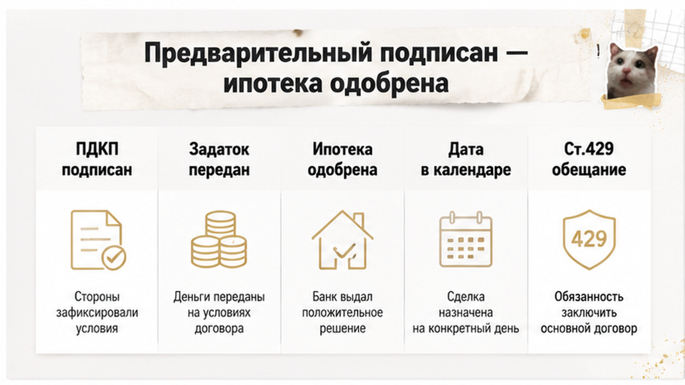
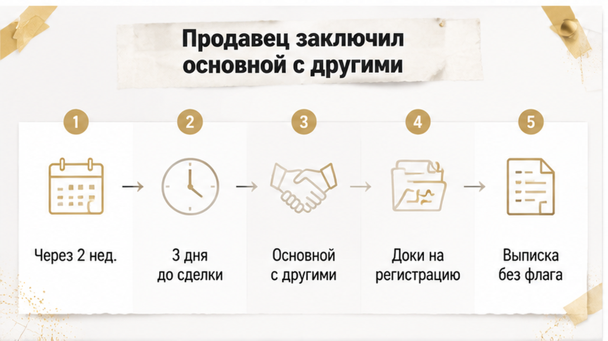
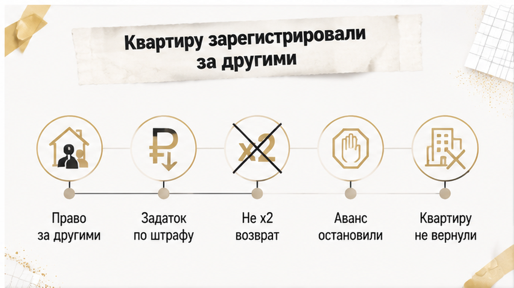
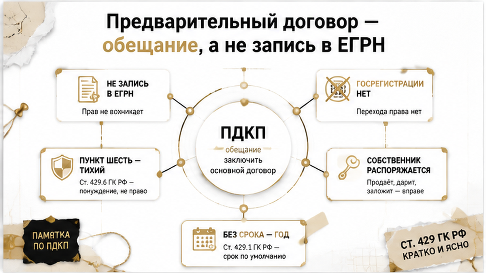
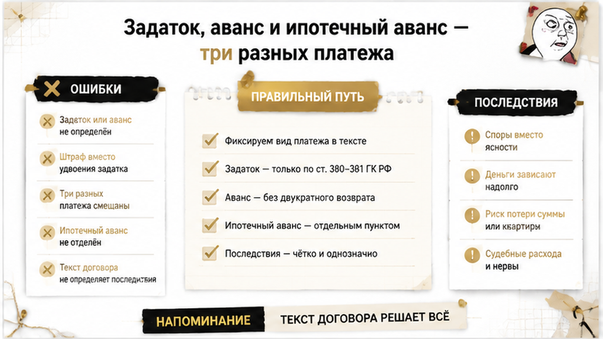
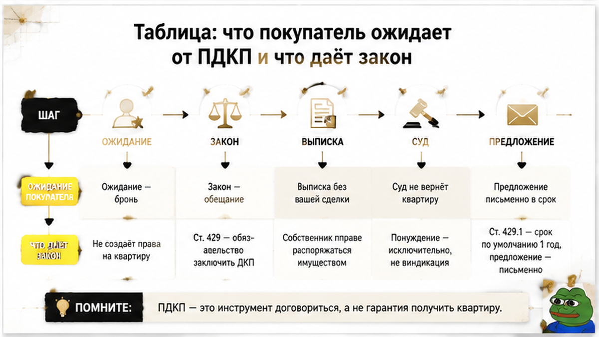

Квартиру, за которую уже внесли задаток и одобрили ипотеку, за три дня до назначенной сделки зарегистрировали на других покупателей.
Семья в Тюмени сделала всё так, как советуют в комментариях: не «на словах», а по бумаге. Выбрали вторичку, подписали с продавцом предварительный договор купли-продажи, передали задаток, получили одобрение банка и поставили дату основной сделки в календарь. Через две недели продавец подписал основной договор с другими покупателями и подал документы на регистрацию — а первые покупатели узнали об этом сами, случайно заметив, что статус объекта изменился. Задаток им в итоге вернули, но по пункту договора о штрафе, а не «в двойном размере, как положено». Квартира ушла. Разбираю это как собирательный тюменский казус — без фамилий, адреса, сумм и номера дела, потому что такие сценарии на вторичке повторяются почти под копирку, и меня в них зовут обычно уже после подачи документов.
Я Святослав Шакин, The Риэлтор, Тюмень. Если у вас на руках предварительный договор и вы не понимаете, что он реально закрепляет, — пришлите текст до следующего платежа. Скажу, что в нём работает, а что просто красиво написано. Telegram · MAX

Со стороны это выглядело как образцовая подготовка. Договорились о цене, зафиксировали её в предварительном договоре, прописали срок заключения основного, передали задаток. Дальше — банк, одобрение, дата в календаре.
И у людей включается совершенно естественное чувство: объект наш, осталось дожить до подписания. Обои уже выбраны, кухня мысленно расставлена.
Юридически же всё ровно так, как это описывает статья 429 ГК РФ: предварительный договор обязывает стороны в будущем заключить основной договор на согласованных условиях. Обязывает — да. Заменяет основной договор — нет. Права собственности он не передаёт и сам по себе ничего в реестре не двигает.
Задаток тоже не декоративный: по пункту 4 статьи 380 ГК РФ задатком может обеспечиваться и обязанность заключить основной договор по предварительному. Конструкция законная. Но обеспечение — это про деньги и ответственность, а не про бронь объекта.
Вот на этой развилке обжигаются чаще всего. Платёж воспринимают как замок на двери. Похожая логика была в истории, где почти внесли задаток за 48 часов до торгов, а квартиру подарили дочери: деньги готовы, а объект живёт своей траекторией.

События пошли не по календарю покупателя. Через две недели после подписания предварительного и за три дня до назначенной сделки продавец подписал основной договор с другими покупателями и сдал документы на регистрацию перехода права.
Первый вопрос, который мне задают в такой момент: «Как он вообще смог? У нас же договор».
Смог. Потому что предварительный договор — про будущее заключение основного, а не про отчуждение квартиры. Собственник обычно сохраняет право распоряжаться своим объектом. От факта подписания бумаги он не превращается в хранителя чужой недвижимости.
Второй вопрос: «А почему нас не предупредили из реестра?»
Потому что предупреждать нечем. Обычный предварительный договор купли-продажи недвижимости государственной регистрации не подлежит, отдельной записи о нём в ЕГРН, как правило, не появляется. Сторонний покупатель заказывает выписку, видит собственника без препятствий — и честно выходит на сделку. Никакого красного флажка «объект уже обещан другой семье» он не получит.
Первые покупатели заметили признаки смены статуса сами — через выписку и вспомогательный сервис отслеживания. Здесь важно не обольщаться: такие сервисы дают сигнал, а не гарантию, статус может отображаться с задержкой, и мгновенного уведомления «кто-то прямо сейчас подал документы» не существует. Но сигнала хватило, чтобы понять: сделка идёт мимо них.

Финал короткий и неприятный. Переход права зарегистрировали за другими покупателями. Квартиру первая семья не получила.
Задаток вернули — на основании пункта самого договора об ответственности и штрафе. Подчёркиваю, потому что в комментариях это путают всегда: автоматического двойного возврата по статье 381 ГК РФ здесь никто не обещал и не считал. Статья 381 действительно допускает двойной возврат при неисполнении стороной, получившей задаток, — но если иное не вытекает из условий. А условия — это конкретный текст конкретного договора.
Дальше остаётся судебный трек, и его нельзя продавать как «сейчас всё вернём». Пока продавец ещё собственник, можно ставить вопрос о понуждении заключить основной договор (пункт 4 статьи 445 ГК РФ), и на такое требование пункт 5 статьи 429 даёт шесть месяцев с момента нарушения. Но если переход права уже зарегистрирован за другим покупателем, понуждение задачу не решает: одну квартиру дважды не передашь. Спор смещается в деньги.
И то, что семья сделала правильно. Увидев изменение статуса, они остановили внесение ипотечного аванса — до выдачи кредита и до оформления аккредитива. Квартиру это не вернуло. Зато остановило вторую потерю, гораздо дороже первой: деньги не ушли в сделку, которой уже не существовало. В истории, где расписку на квартиру написали, а денег на счёте нет, тормоза не сработали вовремя — и разница в исходе колоссальная.

«У нас же договор». С этой фразы начинается почти каждый такой разговор. И договор действительно есть, он подписан, он лежит в папке рядом с одобрением банка.
Только он обязывает стороны заключить в будущем основной договор на согласованных условиях — и всё. Квартиру он не передаёт и сам по себе ничего в реестре не двигает. Обещание человека, а не состояние объекта.
А внутри статьи 429 есть пункт, о котором почти никто не помнит. Пункт 6: обязательства прекращаются, если до окончания срока основной договор так и не заключён и ни одна из сторон не направила другой предложение его заключить. Тихий пункт, злой пункт. Люди подписывают предварительный, ждут, «когда позовут», никаких предложений не отправляют — и через год у них на руках бумага, из которой уже почти ничего не следует. Если срок в договоре не указан вообще, по пункту 4 той же статьи он равен году. Год — это не «пока не купим».
Вторая половина проблемы — реестр. Обычный предварительный договор купли-продажи недвижимости не подлежит государственной регистрации, отдельной записи о нём в ЕГРН, как правило, не появляется. Значит, человек, который завтра закажет выписку по этой квартире, увидит собственника, площадь, обременения — и ни слова про вашу договорённость и ваши деньги.
Поэтому я не говорю клиентам, что предварительный запрещает продавцу показывать и продавать квартиру другим. Это было бы неправдой, а именно на такой неправде покупатели и успокаиваются. Собственник обычно сохраняет право распоряжаться объектом. И сам факт продажи другому человеку автоматически не делает вторую сделку недействительной.
Формулирую так, как формулирую на консультациях: предварительный договор — это ваше право требовать, а не ваша бронь в реестре. Право требовать нужно уметь реализовать. Оно живёт в сроках, в переписке и во вовремя отправленных предложениях, а статус квартиры тем временем идёт своей дорогой.

Второе место, где покупатели теряют деньги, — на словах. «Мы внесли задаток» в разговоре означает одно, а в тексте документа может означать совсем другое.
Задаток отличается от аванса обеспечительной функцией. По пункту 4 статьи 380 ГК РФ задатком может обеспечиваться и обязанность заключить основной договор на условиях предварительного — сама конструкция «ПДКП плюс задаток» законна. Статья 381 при неисполнении стороной, получившей задаток, допускает двойной возврат, если иное не вытекает из условий.
Вот на этих четырёх словах и держится вся арифметика. Три развилки, которые я прошу проверить до передачи денег:
В нашем тюменском казусе сумма была названа задатком, и вернули её по договорному пункту о штрафе. Я специально не пишу «получили двойной возврат по 381-й»: текста договора мы не видели, а от текста тут зависит всё. Деньги вернулись как деньги. Не как квартира.
И третий платёж, который путают с первыми двумя, — ипотечный аванс. Это уже не обеспечение договорённости с продавцом, а банковская механика: выдача кредита, оформление аккредитива, расчёты по сделке. Покупатели остановили именно его. Сохранили деньги — но квартиру этим не вернули. Две разные задачи, и смешивать их не стоит.
Насколько всё держится на буквах, показала свежая линия Верховного суда: летом 2026 года условия предварительного договора об источнике финансирования истолковали буквально — отказ банка сам по себе не даёт автоматического права на возврат задатка, если договор допускает оплату собственными средствами. В нашем случае ипотеку, наоборот, одобрили, и риск пришёл со стороны продавца. Вывод общий: последствия определяет текст договора, а не бытовое название платежа.
Теперь по делу: что остаётся в руках у покупателя, с которым основной договор так и не заключили. Развожу это на три трека — в голове у людей они слиты в одно желание «верните мне квартиру».
Трек первый — понуждение к заключению договора. При уклонении продавца покупатель может ставить вопрос о понуждении по пункту 4 статьи 445 ГК РФ, срок — шесть месяцев с момента нарушения, пункт 5 статьи 429. Трек рабочий, пока продавец ещё собственник. Если переход права уже зарегистрирован за другими, прежний продавец физически не передаст ту же квартиру по решению суда: предмет из его владения ушёл.
Трек второй — деньги. Возврат переданной суммы, штраф или неустойка по договору, возмещение доказанных убытков. Здесь всё упирается в текст: как названа сумма, есть ли пункт об ответственности, зафиксировано ли нарушение, направляли ли вы предложение заключить основной договор в срок. И отдельно про убытки: они не равны разнице между той квартирой, которую вы хотели, и той, которую пришлось купить. Нарушение, причинная связь, размер — всё это доказывается. Разницу в мечтах суд за вас не посчитает.
Трек третий — оспаривание сделки с другим покупателем. Самостоятельное требование со своими основаниями и своим стандартом доказывания. Я не продаю его как обычный способ вернуть квартиру, потому что это не обычный способ, а исключение.
Честная арифметика звучит так. Первый трек работает по времени и статусу объекта. Второй — по тексту вашего договора. Третий — не план Б. Если вам нужна именно эта квартира, защита строится не в суде, а раньше: в сроках, в переписке, в письменном предложении заключить основной договор и в регулярной проверке статуса. То есть до того дня, когда продавец подаст документы с кем-то другим.

Разрыв всегда в одной точке. Человек читает предварительный договор как гарантию. Закон читает его как обещание.
Ниже — ожидания, с которыми люди приходят на подписание, и то, что за этими ожиданиями реально стоит.
| Ожидание покупателя | Что даёт закон и практика | Что сделать до следующего платежа |
|---|---|---|
| «Квартира закреплена за мной» | Ст. 429 ГК РФ: ПДКП обязывает заключить основной договор в будущем. Объект он не отчуждает и обычно не лишает собственника права им распоряжаться | Держать срок до основной сделки коротким и самому следить за статусом объекта, а не за настроением продавца |
| «Запись о договоре видна в ЕГРН» | Обычный предварительный договор купли-продажи недвижимости госрегистрации не подлежит, отдельной записи о нём в выписке, как правило, не появляется | Не рассчитывать, что другой покупатель узнает о вашей договорённости из выписки. Проверять актуальные сведения самому |
| «Задаток вернут в двойном размере» | П. 4 ст. 380: задатком может обеспечиваться обязанность заключить основной договор. Ст. 381 допускает двойной возврат, если иное не вытекает из условий. Не названа задатком — могут квалифицировать как аванс | Читать формулировку, а не заголовок: названа ли сумма задатком и описаны ли последствия для каждой стороны |
| «Суд вернёт мне квартиру» | Понуждение заключить договор — п. 4 ст. 445 ГК РФ, срок шесть месяцев с момента нарушения (п. 5 ст. 429). Но если переход права уже зарегистрирован за другим покупателем, понуждение объект не возвращает | Сразу разделять три трека: понуждение, денежные требования, оспаривание второй сделки |
| «Возместят разницу с любой другой квартирой» | Убытки доказываются: нарушение, причинная связь, размер. Разницу между желаемым объектом и любым другим автоматически не присуждают | Хранить переписку, одобрение банка, назначенную дату сделки и документы о расходах |
| «Договор без срока живёт, пока не купим» | Срок не указан — действует год (п. 4 ст. 429). Договор прекращается, если основной не заключён и ни одна сторона не направила предложение его заключить (п. 6 ст. 429) | Ставить конкретную дату основного договора и направлять письменное предложение, а не звонить |
| «Ипотеку одобрили — дальше всё под контролем» | Линия Верховного суда лета 2026 года: условия ПДКП толкуют буквально. Отказ банка сам по себе не даёт автоматического возврата задатка, если договор допускает оплату собственными средствами | Читать пункт про источник финансирования и последствия, а не бытовое название платежа |
Вся таблица сводится к одной фразе: предварительный договор — это про обязательство человека, а не про состояние объекта. Тот же разрыв был там, где расписку на квартиру написали, а денег на счёте не оказалось: бумага есть, закрепления нет.
Это не инструкция «как купить квартиру». Это разбор последствий конкретного казуса: что могло изменить финал и что в нём реально сработало.
А бывает и наоборот, когда проверка успевает первой. В истории, где перед авансом всплыла умершая жена продавца, сделку остановили до денег — и это оказалось дешевле любого суда.
Вопрос к вам: предварительный договор для покупателя — реальная страховка от продажи квартиры другому или просто бумага до аванса? Напишите в комментариях, что стояло в вашем ПДКП: задаток или аванс, был ли штраф за отказ продавца. Спорные формулировки разберу прямо в ветке.
Если предварительный уже подписан, а у вас ощущение, что продавец «поплыл», — не гадайте по переписке. Пришлите текст, посмотрю, что в нём реально закреплено: Telegram или MAX.
Квартиру в этом казусе покупатели потеряли. Ход — нет.
Они заметили, что статус объекта поменялся, запросили сведения, увидели картину — и не отправили следующий платёж. Ипотечный аванс остался на счету, аккредитив не открыли, кредит не выбрали. Задаток вернулся по договорному пункту о штрафе. Это не победа. Но это позиция человека, который вовремя остановился, а не человека, который потом год догоняет свои деньги.
Вывод из всей истории один. Предварительный договор не закрепляет квартиру — он закрепляет обязательство человека, и стоит это обязательство ровно столько, сколько прописано в тексте. Значит, смотреть надо до денег: до задатка — на формулировки, до ипотечного аванса — на свежую выписку, до сделки — на срок и письменное предложение.
Вторичку в Тюмени покупают каждый день, и большинство сделок проходит спокойно. Разница между спокойной и болезненной почти всегда в одном: успел ли покупатель проверить статус раньше, чем перевёл следующую сумму — как в истории, где задаток чуть не внесли за 48 часов до торгов. Пауза в два дня — самый дешёвый инструмент, который у вас есть.
Материал проверен: Святослав Шакин, личный риэлтор в Тюмени. Ориентир для покупателя, не индивидуальная юридическая консультация.